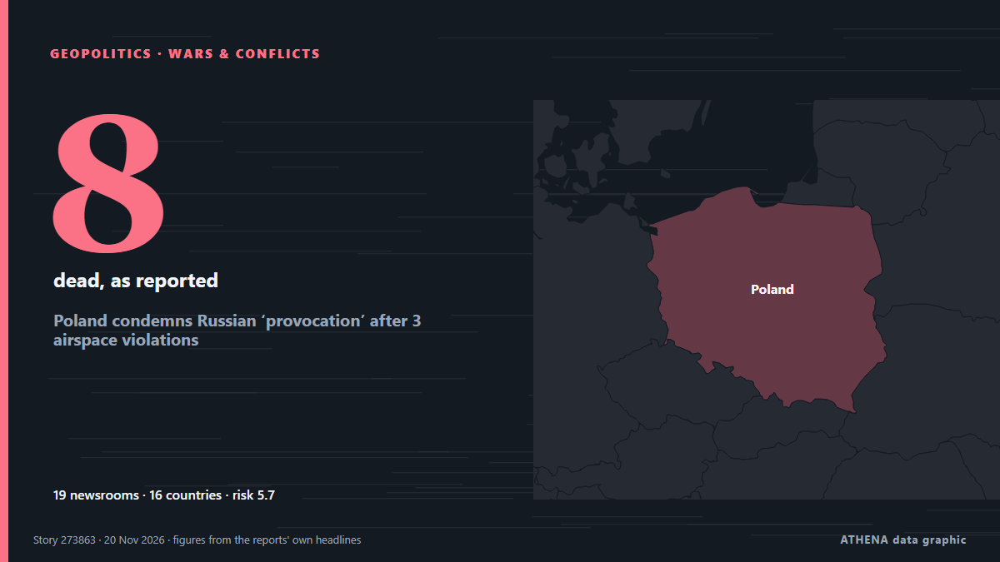

ATHENA Glaux Intelligence — Global news intelligence — every number explained
Every headline, checked across countries.
ATHENA Glaux reads 635 news outlets worldwide. A story becomes a verified event only when independent outlets report it. Each event shows who was first and a risk score with its reasons.
Reports drift in from independent outlets - when two meet on the same story, it becomes a verified event.
How ATHENA checks a story
- CollectReports arrive from independent outlets in many countries.
- MatchWhen two outlets meet on the same story, it becomes a verified event.
- ExplainEach event shows who was first, how far it spread and why the risk is what it is.

GeopoliticsPoland condemns Russian ‘provocation’ after 3 airspace violations
The incursions happened as Poland was set to hold military exercises for the 'Coalition of the Willing', a group of Ukraine's allies, on Friday. from Free Malaysia Today
Lee reiterates 100 mln-won reward for reporting cheating on CSAT
President Lee Jae Myung reiterated Saturday that the government will offer 100 million won (US$75,000) in reward to anyone reporting those who cheated on this week's college entrance exam, calling… from Korea Herald
Countries open path towards 'killer robots' pact
The 128 countries agreed to begin developing an international framework on lethal autonomous weapons systems over the next two years. from Free Malaysia Today

Ships at the world's chokepoints now
Live AIS counts. Tap or hover a bar for the detail.
Yemen's Houthis threaten to strike Saudi Red Sea ports
Yemen’s Houthis threatened on Friday to attack Saudi Arabia’s Red Sea ports if Saudi-led coalition forces struck the strategic Red Sea port of Hodeidah. from Business Recorder
Trump, Xi and Putin release ‘peace declaration’ from unprecedented summit
By Jarrett Renshaw and Trevor Hunnicutt SHENZHEN, China, Nov 19 (Reuters) - Chinese President Xi Jinping and his US and Russian counterparts Donald Trump and Vladimir Putin agreed on a symbolic… from Al-Monitor
Robert Pattinson said he would wait 20 years to ‘go for’ Bond – he got it in 14
It’s reported that the announcement about who will be the next James Bond is now imminent - with plenty of actors still in the frame to take on the iconic role. from The Scotsman
Geopolitics, Politics & Security
More ›Trump defends calling Putin a friend, unsure if he's a friend to US
President Donald Trump has defended calling Russian President Vladimir Putin a friend but says he “can’t speak” to whether the Russian leader is a friend to the U.S. from The Korea Times
- Elections & politics
UK and EU strike ‘landmark’ deal to rebuild ties after Brexit
- Elections & politics
Crime Costs Brazil US$74B as Lula Waits
- Elections & politics
Netanyahu associates acknowledge role in setting off election day arrests
- Wars & conflicts
Saudi-Led Coalition Says Downed 3 Houthi Missiles Headed For Riyadh
Economics, Finance & Markets
More ›UK braced as temperatures could drop to minus 10C in coldest night of autumn
Freezing fog could make for difficult driving conditions on Saturday. from Evening Standard (London)
- Debt & budgets
EU proposes tax on big tech companies to fund budget
- Crypto & digital assets
‘The Altruists’ Review: Netflix’s Slight Sam Bankman-Fried Series Tells a Strange, Crooked Love Story
- Crypto & digital assets
Bitcoin price falls below $60,000
- Stocks, bonds & markets
Anthropic set to surge, but indices fall back
Trade, Industry & Infrastructure
More ›Horror moment Pontins ceiling crashes down as granny suffers fatal injuries
Wendy Jones sustained severe injuries in the incident at Pontins in 2019, which directly led to her death six months later. from Liverpool Echo
- Aviation, rail & road
All 146 Air Niugini Plane Passengers and Crew Safe after an Emergency Landing in Philippines
- Agriculture & food security
FBI, US Agriculture Department breached by hackers: reports
- Construction & infrastructure
Russia Has No Timeline for Crimean Bridge Repairs, Deputy PM Says
- Construction & infrastructure
Carnival Orders Two LNG-Powered Cruise Ships from Fincantieri
Energy, Resources & Environment
More ›Nepal flood victims' families may wait up to a year for death certificates
KUALA LUMPUR: Families of Malaysians missing in the Nepal floods could face another three to 12 months, or longer, to obtain certificates of presumption of death, Malaysia Solidarity Families in Hope… from New Straits Times
- Critical minerals
Peru and Japan agree to strengthen El Niño preparedness and promote investment
- Climate & climate policy
Climate Minister Musadik Malik arrives in India for SCO dialogue
- Climate & climate policy
Countries race to secure COP31 deal after fossil fuel row
- Climate & climate policy
COP31 in Antalya: five takeaways from the ‘implementation’ climate summit
Technology, AI & Cybersecurity
More ›US approved Nvidia, AMD chip sales to China, reviving security concerns
The weakness came amid a wider sell-off in regional equity markets, with Japan’s Nikkei 225 down 2% and South Korea’s Kospi losing 2.6%. from Cointelegraph
- Cybersecurity
The FBI was hacked again, this time the breach targeted its crime database
- Artificial intelligence
Anthropic researcher claims to solve Riemann maths problem with Claude
- Robotics & automation
Nations at UN talks on AI killer robots agree to more talks but no firm commitment to rein them in
- Space & satellites
Incoming Democratic chairman warns US lawmakers could halt SpaceX funding following Starshield slowdown in Ukraine, CNN reports
Business, Companies & Investment
More ›CITEX 2026 Brings Together Over 100 Iranian Technology Companies
Tehran’s CITEX 2026 exhibition is showcasing homegrown technological innovations aimed at addressing urban challenges and improving public services. from Tehran Times
- Sectors & company risks
Honda, Toyota recall 1.6 million vehicles over Takata airbag rupture risk
- Corporate strategy
‘GTA 6’ Raked In $3.8 Billion Sales On First Day—The Largest Entertainment Launch Ever
- Corporate strategy
‘GTA 6’ Hits Massive $3.79 Billion in First-Day Sales
- Investment & capex
Angola’s ANPG says Exxon takes $4 billion FID on Kizomba fields, makes discovery
Accidents & emergencies
More ›Pedestrian killed in ‘scrambler bike’ hit-and-run
The man was taken to Mayo University Hospital for treatment of serious injuries but was subsequently pronounced dead. from Irish Mirror
- Accidents & emergencies
Six policemen injured as bus rams police van
- Accidents & emergencies
Man convicted of starting deadly 2025 Palisades blaze in Los Angeles
- Accidents & emergencies
At least 1,144 children killed or injured in Ukraine during Russia's war this year, UNICEF says
- Accidents & emergencies
England will need fire and pride to beat New Zealand – Steve Borthwick
Three ways to read today
Start with the one that fits your timeVerified events
Ranked by how widely they are reported
- Jensen Huang has 5 ways to push for an Nvidia comeback145 outlets · 47 countriesRisk 4.8
- Tanker struck on stern off Oman's Khasab, a day after another ship set ablaze117 outlets · 43 countriesRisk 6.0
- Two feared drowned while bathing in sea off Nintavur64 outlets · 35 countriesRisk 5.2
- Tanker catches fire after projectile strike near Strait of Hormuz - UKMTO80 outlets · 31 countriesRisk 4.8
- Fossil fuel row stalls COP31 climate deal44 outlets · 24 countriesRisk 3.0
Analysis Desk
Ask a question and read a reasoned assessment of a leading story, with what would prove it wrong.
Open the Analysis Desk ›Today in numbers
| 11:00 | 498 |
|---|---|
| 12:00 | 540 |
| 13:00 | 424 |
| 14:00 | 744 |
| 15:00 | 783 |
| 16:00 | 541 |
| 17:00 | 760 |
| 18:00 | 616 |
| 19:00 | 464 |
| 20:00 | 571 |
| 21:00 | 0 |
| 22:00 | 0 |
| 23:00 | 0 |
| 00:00 | 0 |
| 01:00 | 0 |
| 02:00 | 0 |
| 03:00 | 0 |
| 04:00 | 0 |
| 05:00 | 0 |
| 06:00 | 0 |
| 07:00 | 1097 |
| 08:00 | 945 |
| 09:00 | 867 |
| 10:00 | 972 |
Risk of today's events
Emerging signals
- Sudden surge · Active nowHodeidah
- Sudden surge · Active nowBayelsa
- New name in the news · Active nowJonathan Rinderknecht
- Sudden surge · Active nowBasra
- Sudden surge · Active nowSCO Civilisational Dialogue Forum
Official warnings
- M 5.9 - 238 km SW of Yanglong, ChinaM5.9 · PAGER yellow · USGS ·
- Orange notification for tropical cyclone AKVAN-26. Population affected by Category 1 (120 km/h) wind speeds or higher is 0 (20.826 million in Tropical Storm).Orange · GDACS ·
Stay informed
ATHENA Weekly Risk Picture
The week's biggest geopolitical, economic and shipping risks, cross-checked and scored.
Every Friday at 08:00 Athens time · free · in English
Subscribe freeATHENA on Telegram
News the moment it is published: breaking events at risk 6 or more, an hourly round-up, risk-tracker updates and the daily briefing at 10:00.
Free · posts in English · leave at any time
Join the channelSign-up is handled by beehiiv with double opt-in: nothing you type is sent to ATHENA, and every issue has an unsubscribe link.
Risk trackers
More ›Global risk outlook — week 47, 2026 (16–22 Nov) ›